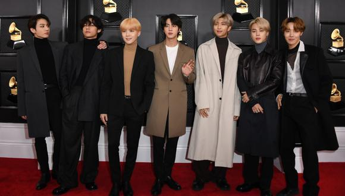
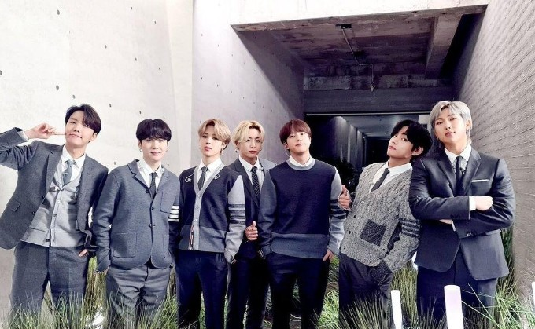

BTS es una boy band, formada en Seúl el 2010,
que está compuesta por 7 integrantes.
Su debut fue el 13 de junio del 2013, bajo
la compañia y empresa Big Hit Entertaiment, con
la canción "No More Dream". Son caracterizados por
el estilo de Hip Hop, pero se han destacado mucho más
por crear álbumes concepatuales con influencia en obras
literarias y de psicolofia, ya que en sus canciones tratan
de temas muy importantes sobre la Sociedad,con temas
como la salud mental, la pérdida y uno de los procesos más
importantes, lo cual es el proceso de amor propio y el individualiamo
💜¿Qué significa BTS?💜
BTS es una abreviatura de la expresión coreana "Bantagn Sonyeondan", que significa
"Boy Scouts a prueba de balas", tambein tiene otros significados, ya que los miembros
y la compañia daban otros respctivos con las siglas, esto hace referencia al deseo del grupo
de dejar las criticas, y estereotipos y expectativas que son dirigidas a los jovenes. Son un
grupo que trasmite cosas positivas a los jovenes, adolescentes de hoy en día. Esto amplió el simbolismo
de su nombre, que representan a la "juventud en evolución" que sobreponen a las realidades a las
que se enfrenta y que sigue adelante.
Bangtan

La formación de BTS emepzó en 2010,durante su debut el grupo empezó a ganar mucha más atención, por medio
de las redes sociales, ya que ellos realizabn covers de diversas canciones de otros artistas.Crearon su concepatuales
de Youtube, BANGTANTV, y creaban blogs constantemente. En estás paginas cada uno de los integrantes
publicaban algunas canciones en las cuales trabajaban constantemente como aprendices.Subian contenidos como vlogs, análisis
de equipo musical o sus prácticas de canto y baile.
BTS ha estado dentro de los rankings Billboard 200 debido al granexito de su música, siendo el primer grupo Kpop y
surcoreanos en conseguirlo, ha gando categorias como "Mejor artista de Corea del Sur" en los MTV Europe Music Awards
, también los premios asiaticos como: los Melon Music Awards, Golden Disk Awards, Seoul Music Award. Han sido reconocidos
internacionalmente por todo el mundo, ya que ellos dan un cambio completo a su imagen y sonido, el grupo deseaba expresar la belleza
y ansiedad de la Juventud. Han tenido muchas giras a nivel mundial, a lo cual han viajado a Australia, Japón, Chile, Brasil
México, Inglaterra y Estados Unidos. Han sido incluidos en las ediciones internacional de la revista Time como Líderes de la
nueva generación, y fueron parte de la lista de las 25 personas más influyentes del mundo en 2019, los cuales estaban apodados como
"Principes del Pop". Han establecidos campañas antiviolencias como lo es la campaña antiviolencia Love Myself
en colaboración con UNICEF, BTS dio un discurso en la edición 73 y 75 de la Asamblea General de las Naciones Unidas. Posteriormente son los integrantes
que se convirtieron en los receptores más joevenes de la Orden al Mérito Cultural, otorgada por el gobierno surcoreano por ayudar a expandir la cultura y el idioma coreano en el mundo.
Además de las inspiraciones musicales, BTS también ha empleado medios literarios, psicológicos, artísticos y filosóficos para poder crear su material discográfico.
BTS escribe y produce la mayoría de sus canciones, lo cual ha sido señalado por algunos medios como la clave de su éxito. Desde su debut, el grupo ha sido elogiado por
hablar honestamente sobre temas que consideran importantes, incluso en una sociedad conservadora. BTS se ha enfocadoe que la generación joven se vea reflejada en su música al contar sus
propias historias y experiencias. Su gran impacto y actividad por medio de las redes sociales también ha llamado la atención de la prensa, que ha señalado que toda su contenido en vídeos en sus canales de Youtube
y VLive App crea un ecosistema propio y equilibrado para todos los jovenes de la sociedad, ha granjeado diversos logros por medio de la red social Twiter, en el 2018 el grupo fue nombrado por la revista Forbes
como la celebridad más influyente y poderosa de Corea en su lista Korea Power Celebrity.
INTEGRANTES DE BTS
Imagen
Nombre artístico
Nombre real
Fecha de nacimiento
Puesto
Jin
Kim Seok-jin
4 de diciembre de 1992(28 años)
Vocalista, visual y baílarin
Suga
Min Yoon-gi
9 de marzo de 1993(28 años)
Rapero y baílarin
J-Hope
Jung Ho-seok
18 de febrero de 1994(27 años)
Rapero,baílarin principal y vocalista ocasional
RM
Kim Nam-joon
12 de septiembre de 1994(26 años)
Líder, rapero principal y baílarin
Jimin
Park Ji-min
13 de octubre de 1995(25 años)
Vocalista, y baílarin principal
V
Kim Tae-hyung
30 de diciembre de 1995(25 años)
Vocalista, visual y baílarin
Jungkook
Jeon Jung-kook
1 de septiembre de 1997(23 años)
Vocalista principal, baílarin principal, centro y sub-rapero
DISCOGRAFÍA
Discografia de BTS

Infromación General
Álbumes de estudio
7
Álbumes recopilatrios
5
EP
6
Sencillos
48
Bandas Sonoras
1
Álbumes Sencillos
1
La discografía de BTS, cosnta de 4 álbumes de estudio, sesis EPs, un álbum sencillo y tres álbumes recopilatorios en Corea del Sur
, además de cuatro álbumes de estudio, nueve álbumes sencillos y dos álbumes recopilatorios en Japón. Sus ventas han elevado tras los años
ya que el grupo se ha dado conocer mundialmente, y se ha expandido globalamnete, lo que ha hecho que todas sus fans o seguidoras compren y
escuchen toda su música. Su popularidad es bastante grande a nivel mundial, ya que su calidad y producción musical son excelentes. Tanto es así que tiene
un equipo de expertos detrás de cada lanzamiento, y esto es así también para cada uno de sus álbums, ya que en ellos viene incluidos:photocards de cada uno de los
integrantes, o regalitos extras, y una revista de todos sus éxitos.
ÁLBUMES
Álbum
Imagen
Detalles
Canción Destacada
2 COOL 4 SKOOL
Es el primer single y material musical oficial lanzado por Big Hit Entertaniment
para BTS, el grupo debúto como idols con este single en 2013, presentando la canción No More Dream
Este single al ser llevado a la venta en Japón, fue promocionado junto al mini-álbum O!RUL8,2?
, en un disco donde incluyen las canciones y MV de ambos CDs., este álbum presume de juna duración
de 27 minutos completos. Algunas de las canciones de este álbum son:
No More Dream
Interlude
We Are Bullertproof Pt.2
We on
Luv in Skool
SKOOL LUV AFFAIR
Es el segundo álbum de la boy band. El álbum fue publicado el 12 de febrero de 2014 y contiene 10 canciones
, siendo Boy in Luvsu sencillo principal. En abril, el grupo promovió Just one day, otro sencillo del álbum.
El tráiler del álbum consistía de coloridas formaciones que aparecian en la pantalla.
Boy in Luv
Just One Day
Tomorrow
Jump
Spine Breaker
DARK&WILD
Es el primer álbum completo y caurto material musical oficial lanzado por Big Hit Entertaniment para BTS, el álbum
presenta 14 canciones de las cuales fueron 2 las promocionadas. Bts cantó sobre el amor y la furia en DARK&WILD.
Algunas de las canciones de este álbum son:
Danger
Rain
Let me know
Look Here
War of Hormone
The Most Beautiful Moment in Life: Pt1, Pt2 y Young Forever
Es el cuarto álbum EP de la boy band, fue publicado el 29 de abril del 2015, y es el primer álbum del proyecto de dos partes
del grupo que se centra en la "Youth" (Juventud).Este es el primer álbum en el cual todos los miembros participaron o en la producción, la
composición o la escritura de las letras. Algunas de las canciones de este álbum son:
I Need U
Dope
Converse High
Moving On
Hold me Tight
WINGS
Es el segundo álbum completo de BTS. este álbum representa un nuevo concepto para el grupo, representa a través de 7 solos para cada
miembro, además de 8 canciones en grupo, de las cuales 3 fueron promocionadas. Fue publicado el 10 de octubre de 2016.
Algunas de las canciones de este álbum son:
Blood Sweat & Tears
Begin
Lie
First Love
Stigma
YOU NEVER WALK ALONE
Es la segund álbum extendido de BTS, este álbum da un mensaje de eperanza y confort hacia la juventud de está generación. Completa la historia
de juventud y crecimiento que no pudo ser contenida al completo en WINGS
Algunas de las canciones de este álbum son:
Spring Day
Not Today
Awake
2!3!
Am I wrong
Love Yourself/ Face Yourself
Es el doceavo material producido por el grupo y el segundo álbum re-empaquetado, la conclusión de la serie LOVE YOURSELF, donde el nombre dado es "Answer"
, la respuesta a todo lo planteado en los trabajos anteriores, este álbum representa la palabra "Amarse a si mismo es donde el verdadero amor hace" uan creación junto a sus fans ARMY,
el álbum fue lanzado en marzo del 2017. Algunas de las canciones de este álbum son:
Fake Love
DNA
IDOL
Magip Shop
Mic Drop
Epiphany
Euphoria
MAP OF THE SOUL:PERSONA
Es el sexto mini-álbum del grupo BTS y es el primero en dar inicio a la nueva serie de álbumes "MAP OF THE SOUL", introduciendo a un nuevo concepto para el grupo.
. Los íconos globales BTS dan su corazón a sus fas encontrando felicidad en el amor y alcanzando al mundo, fue lanzado el 12 de abril de 2019.
Algunas de las canciones de este álbum son:
Boy With Luv
Make it rigth
Mikrokosmos
HOME
Dionysous
MAP OF THE SOUL:7
Es el cuarto álbum completo de BTS y el segundo de las series MAP OF THE SOUL, celebrando los 7 años de carrera de los 7 miembros juntos, este es la primera producción original más extensa
en la discografía del grupo, y uno de los más vendidos por todo el mundo, contando con sub-unidades, solos y canciones en grupo, el álbum fue lanzado el 21 de febrero de 2020, y es uno de los álbumes más vendidos por
todo el mundo. Algunas de las canciones de este álbum son:
ON
Black Swan
00:00(Zero O´clock)
Friends
Moon
BE
Es el quinto álbum de estudio del grupo. Fue lanzado el 20 de noviembre de 2020 a través de Big Hit y Columbia Records, el cual tuvo una gran recepción por parte de la crítica y a nivel comercial, siendo uno más de sus
álbumes más vendidos, este álbum posiciono a una de sus canciones en el top Hot 100 Billboard, lo cual graccias a esto y a su canción DYNamiTE están nominados a los premios más importantes de la música los GRAMMY.
Algunas de las canciones de este álbum son: